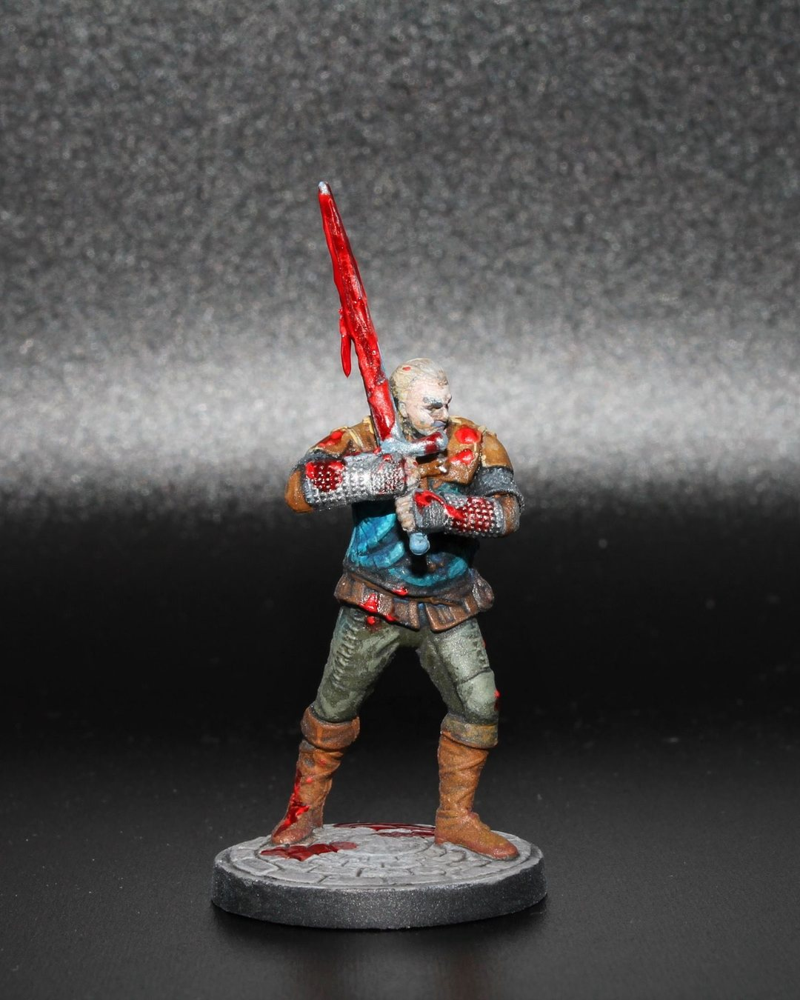
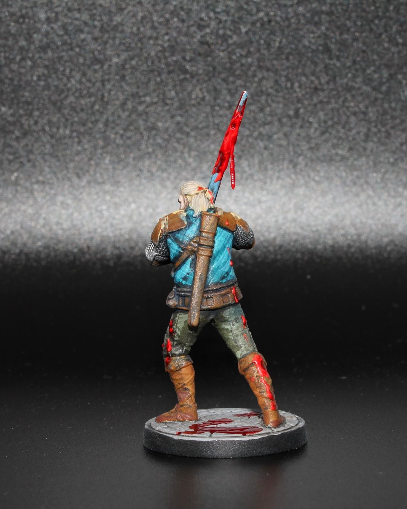

The Witcher Aug 24, 2025
Vesemir
Did I go overboard on the blood? …Nah, Vesemir’s seen worse. 😅🩸
I really leaned into the aftermath vibe on this one—splattered steel, stained boots, and a monster just off-camera. Felt right for the oldest Witcher in the school.
Painted for The Witcher: Path of Destiny by @go.on.board and @cdprojektred
Let me know if it’s too much… or just enough. 👀⚔️
#MiniaturePainting #Witcher #PathOfDestiny #Vesemir #BloodForThePath #TabletopGaming #BoardGames #GoOnBoard #CDProjektRed #PaintingMinis #Warhammer